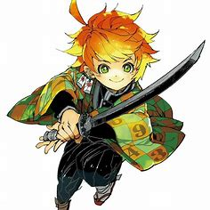

Emma Nº: 63194
Protagonista otimista da história


Sobre
Carinhosa e extrovertida, Emma muitas vezes se mostra uma das órfãs mais confiáveis e é frequentemente vista cercada por amigos. Ela é conhecida por sua incrível habilidade de aprender, atletismo capaz e amplo otimismo.
Sendo uma das crianças mais inteligentes que vivem na Grace Field House, Emma é considerada uma das três "bens de qualidade Premium" da Grace Field House, juntamente com Norman e Ray.
Após seu sucesso de escapar de Grace Field ao lado de Ray e outros 13 órfãos, Emma procura encontrar William Minerva, que ela acredita que pode conceder a ela e seus amigos a liberdade de viver uma vida segura e pacífica longe dos demônios.